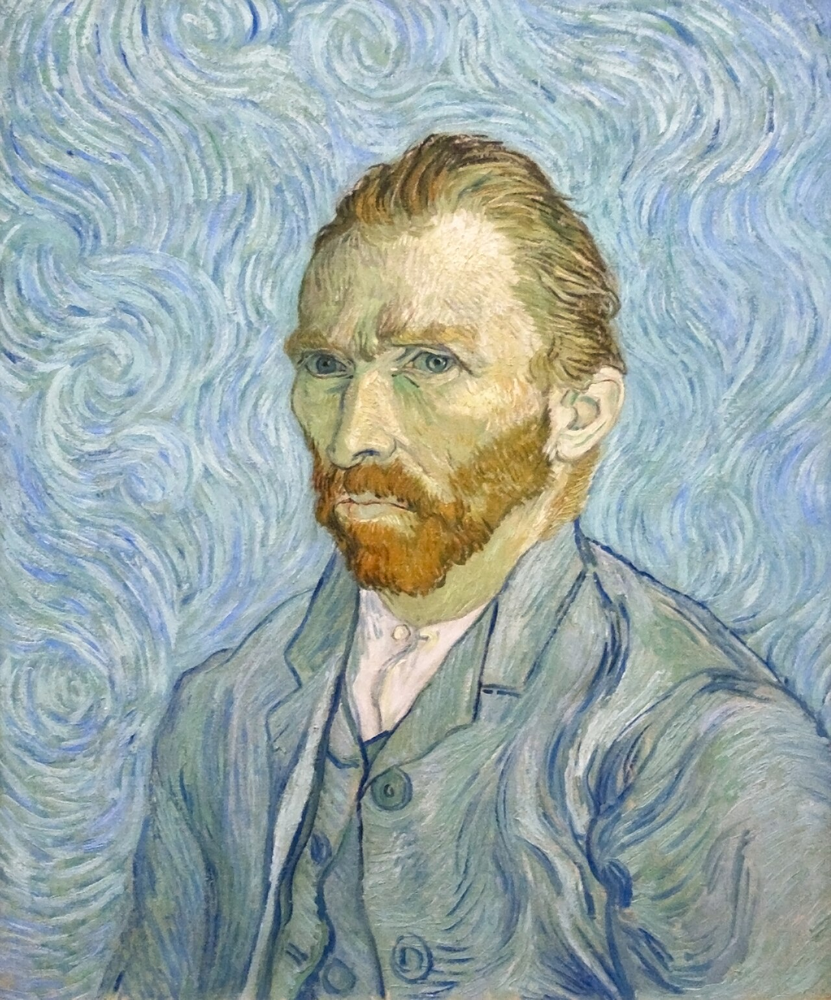

Fig. 1 — Vincent van Gogh, Self-Portrait, settembre 1889, olio su tela, 65 × 54,2 cm. Musée d'Orsay, Parigi.
Van Gogh a Theo, 5-6 settembre 1889 (lettera 800), paragonando il dipinto con quello oggi a Washington. Fonte: Van Gogh Letters Project — traduzione inglese.
| Autore | Vincent van Gogh |
|---|---|
| Data | settembre 1889 |
| Tecnica | olio su tela |
| Dimensioni | 65 × 54,2 cm |
| Collezione | Musée d'Orsay, Parigi |
| Catalogo | F627/JH1772 |
| Luogo di creazione | Saint-Rémy-de-Provence |
Dipinto durante il ricovero nel manicomio di Saint-Rémy, questo celebre autoritratto si distingue per lo sfondo vorticoso in blu, formato da linee e spirali cinetiche che evocano la sua instabilità interiore, ulteriormente amplificata dai capelli e la barba ondulati, in contrasto con la sua immobilità. Gli occhi dell'artista sono fissi, seri e allucinati, catturando immediatamente l'attenzione dell'osservatore sul suo viso ansioso ed intransigente; l'opera è dominata dalle tonalità del verde assenzio e del turchese pallido, nettamente contrastanti con l'arancione acceso della barba e dei capelli. Il quadro rimase per decenni nella collezione privata di Paul e Marguerite Gachet, figli del dottor Paul Gachet — il medico che ebbe in cura Van Gogh negli ultimi mesi di vita ad Auvers-sur-Oise — prima di essere donata allo Stato francese nel 1949 ed entrare così nelle collezioni pubbliche, oggi conservato al Musée d'Orsay.
Arricchimento — record di autorità
File collegati
Risorse esterne